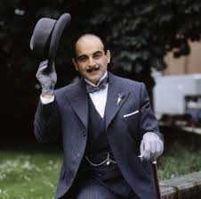

Słynny detektyw, Herkules Poirot wybiera się na rejs po Nilu ekskluzywnym statkiem wycieczkowym "Karnak". Na rejs wybrało się znamienite towarzystwo, między innymi znana na całym świecie piękna i młoda milionerka Linnet Doyle ze swoim świeżo poślubionym mężem, Simonem. Młoda para jest właśnie w trakcie swojej podróży poślubnej. Jednak już pierwszego dnia, Poirot zauważa, że nie wszyscy dobrze życzą państwu Doyle. Pewna młoda kobieta ewidentnie prześladuje zakochanych i prowokuje do sprzeczek, ku wielkiemu oburzeniu zwłaszcza Simona. Okazuje się, że jest to Jacqueline de Bellefort, była narzeczona pana Doyle'a, która ciągle nie może się pogodzić ze stratą ukochanego i od dłuższego czasu prześladuje młodą parę. Sytuacja robi się niebezpieczna, kiedy pewnego dnia podczas zwiedzania egipskiej świątyni, Linnet o mały włos nie zostaje uderzona wielkim głazem. Dla Poirota staje się jasne, że milionerka jest w śmiertelnym zagrożeniu i postanawia zatroszczyć się o jej bezpieczeństwo.
Po raz pierwszy pojawił się w powieści Tajemnicza historia w Styles w 1920, ale sławę zyskał dopiero po wydaniu Zabójstwa Rogera Ackroyda w 1926. Powieść ta, a zwłaszcza jej zakończenie, stanowi przełomowy moment w historii powieści kryminalnych. W ostatniej książce z Poirotem pt. Kurtyna, wydanej w 1975, Christie uśmierca stworzoną przez siebie postać.
Agatha Mary Clarissa Miller Christie
ur. 15 września 1890 w Torquay,
zm. 12 stycznia 1976 w Wallingford
brytyjska autorka powieści kryminalnych i obyczajowych.
więcej...
Główny bohater to :
Herkules Poirot,
fikcyjna postać detektywa stworzona
przez Agathę Christie.
CYTATY Z KSIĄŻKI
"- Moim zdaniem ludzie znaczą więcej od kamieni.
- Ale nie są tak długowieczni jak one - dorzucił Herkules Poirot."
"- Moim zdaniem ludzie znaczą więcej od kamieni.
- Ale nie są tak długowieczni jak one - dorzucił Herkules Poirot."
"Miłość to jeszcze nie wszystko, moja panno — odparł łagodnie Poirot. — Tak nam się tylko wydaje, kiedy jesteśmy młodzi."
"Miłość to jeszcze nie wszystko, moja panno — odparł łagodnie Poirot. — Tak nam się tylko wydaje, kiedy jesteśmy młodzi."
"Niech pan, proszę, spojrzy na księżyc. Widzi go pan wyraźnie. Jest on najzupełniej realny. A jeśli zaświeci słońce? To pan wcale księżyca nie dostrzeże!"
"Niech pan, proszę, spojrzy na księżyc. Widzi go pan wyraźnie. Jest on najzupełniej realny. A jeśli zaświeci słońce? To pan wcale księżyca nie dostrzeże!"
Komentarze
Wakacyjny przebój kryminalny wszech czasów. Wystarczy wziąć jednego nietuzinkowego detektywa i umieścić go w egzotycznych plenerach. Całość doprawić kilkoma przebiegłymi morderstwa i szczyptą humoru. I gotowe! Agata Christie przenosi nas w czasy, kiedy Egipt nie kojarzył się z hordami rozwrzeszczanych polskich turystów. Panie nosiły stylowe kreacje, panowie nie rozstawali się z twarzowymi kapeluszami, a mordercy zabijali z pewną dozą finezji i klasy. W pięknych okolicznościach pustynnej przyrody niezrównany Hercules Poirot wsiada na ekskluzywny statek wycieczkowy, ale nie za długo dane mu będzie cieszyć się błogim wypoczynkiem. Bo jak zwykle, gdy w pobliżu jest belgijski detektyw, ktoś musi popełnić zuchwałe morderstwo.. i kolejne.. i... "Śmierć na Nilu" to znakomicie skonstruowany kryminał, który czyta się z prawdziwą przyjemności o każdej porze roku, ale jakoś najlepiej "smakuje" upalnym latem!
Porywający kryminał! Gdy Herkules Poirot wybiera się podczas urlopu do Egiptu, nie spodziewa się, że będzie musiał rozwikłać zagadkę morderstwa trzech osób! Kto jest mordercą? Według mnie jest to świetny kryminał. Jestem nim zachwycona. Wciągnął mnie już od samego początku. Razem z detektywem Poirot odkrywałam stopniowo, kto dopuścił się tych zbrodni. Książka naprawdę warta polecenia. Myślę, że spodoba się każdemu wielbicielowi klasycznych kryminałów.
Ta książka to prawdziwe mistrzostwo i lektura dla każdego! Co prawda ja domyśliłam się tego kto był mordercą, ale w książce znajdziemy też wiele innych wątków kryminalnych, których już nie tak łatwo się domyślić :) Bohaterowie są bardzo sympatyczni, a wszystkim znanym detektyw Poirot znowu musi znaleźć dowody i jak zawsze bezbłędnie odgadnąć kto był mordercą...POLECAM :)
Są ofiary, są podejrzani, są poszlaki, dowody i trzeba wskazać winnego. Podoba mi się taki styl śledztwa… typowy dla Poirota - przesłuchania i jego dedukcje. Akcja powieści toczy się swoim rytmem, nie biegnie na złamanie karku… W książkach Christie liczy się spokój, napięcie i subtelność. W tej historii znajdziemy miłość i pieniądze, czyli namiętności, dla których zazwyczaj się grzeszy. Wątki się przeplatają a bohaterowie są barwni i nie przejrzyści. Nie mamy wszystkiego podanego na tacy…rach ciach i już mamy trupka w przysłowiowej szafie. Podsumowując: kryminał najwyższych lotów. Fabuła jest dopracowana w najdrobniejszych szczegółach. Nie nudzi, a do tego jest wręcz przepełniona elegancją i barwnymi dialogami. Jest to książka, którą można się delektować. Czytałam ją z wielką przyjemnością i zaciekawieniem. Ani przez sekundę nie poczułam się rozczarowana czy zniechęcona.
Agatha Christie, Lady Mallowan, DBE, właśc. Agatha Mary Clarissa Miller Christie
(ur. 15 września 1890 w Torquay, zm. 12 stycznia 1976 w Wallingford) brytyjska autorka powieści kryminalnych i obyczajowych. Córka Clary i Fredericka Miller.
Najbardziej znana na świecie pisarka kryminałów oraz najlepiej sprzedająca się autorka wszech czasów. Wydano ponad miliard egzemplarzy jej książek w języku angielskim oraz drugi miliard przetłumaczonych na 45 języków obcych. W samej Francji sprzedano 40 milionów jej książek. Pod pseudonimem Mary Westmacott wydała kilka powieści obyczajowych, które również cieszyły się popularnością... więcej
Herkules Poirot – fikcyjna postać detektywa stworzona przez Agathę Christie.
Bohater pojawia się w ponad 30 jej książkach.
Poirot urodził się w Belgii, gdzie pracował jako oficer policji. Konkretna data urodzin nie jest znana. Po I wojnie światowej przeprowadził się do Anglii i rozpoczął drugą karierę, tym razem prywatnego detektywa. Charakterystyczne dla niego rysy postaci to mały wzrost, jajowata głowa, starannie pielęgnowane wąsy, ubiór dandysa, obsesja na punkcie porządku i symetrii, a także pogarda wobec klasycznych metod detektywistycznych. Poirot stawia raczej na psychologię zbrodni. Raz nawet założył się ze swoim przyjacielem Inspektorem Jappem, że może rozwiązać zagadkę nie ruszając się z krzesła, a używając jedynie swoich „małych szarych komórek”. Podobnie jak wielu innych detektywów ze „złotego wieku” powieści kryminalnych jest stanu wolnego (jak np. panna Marple czy Sherlock Holmes)...więcej
Jane Marple, bardziej znana jako panna Marple
detektyw amator, postać fikcyjna stworzona przez pisarkę Agathę Christie.
Panna Marple mieszka w małej wiosce St. Mary Mead. Na pozór jest typową, trochę wścibską starą panną. Ale gdy musi zmierzyć się z zagadkami kryminalnymi, wykazuje niesłychaną bystrość umysłu. Zgodnie z tradycyjnymi wzorcami powieści kryminalnej wprowadza w zakłopotanie stróżów porządku, którzy zajmują się sprawami kryminalnymi. Zawsze odnajduje jakieś analogie między zachowaniem przestępców a zdarzeniami, które zaszły kiedyś w jej rodzinnej wiosce. Rozpoznanie psychologicznych słabostek przestępców często pomaga jej w odkryciu mordercy. Pozornie rozkojarzona i nieporadna panna Marple myśli przenikliwie i trafnie, stosuje dedukcję, ujawnia praktyczną znajomość psychologii, ma wyobraźnię – toteż zawsze potrafi zdemaskować zbrodniarza... więcej